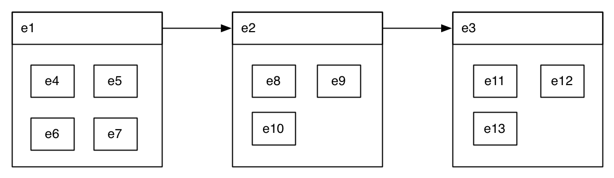

So we have SputLink, which takes a set of nodes (events and times) and a queue of tlinks. It builds a graph from all the nodes and adds the tlinks to the graph one by one as constraints between nodes and after each added link/constraint runs closure (aka Allen's constraint propagation). Sometimes a link can not be added because it is consistent with an existing link in the graph. When a link can be added then closure will not generate inconsistencies. When SputLink terminates you can get all the links from your graph. You may filter them by not getting the links with disjunctions of TimeML relations and/or by not getting relations added by closure. In any case, we have this:
+-------+ +----------+ +-------+ | Links | ==> | SputLink | ==> | Links | +-------+ +----------+ +-------+Or in short
Li => SPUTLINK => Lj
Here Li and Lj are sets of links. Note that we let Li stand for the links and the nodes they link.
Now you can play with the input without touching SputLink it self at all, for example by ordering the set of incoming links:
Li => ORDER_LINKS => Lj => SPUTLINK => Lk
This is basically what the LinkMerger module does. It takes the links, orders them and then feeds them into SputLink. The ordering function takes two things into account: (1) what component created the links and (2) if two links were generated by the classifier, what was the score the classifier gave the relation.
When we are dealing with equivalence classes (events linked by equality/simultaneous links), then we can do the following:
Li => COLLAPSE_NODES => Lj => SPUTLINK => Lk
Collapsing nodes means that when you have two nodes with an equality link
[Node_i equal Node_j]
you can remove Node_j and replace Node_j in all links that have it with Node_i.
For example, if we have
[Node_i] [Node_j] [Node_k] [Node_i equal Node_j] [Node_j before Node_k]
you end up with
[Node_i] [Node_k] [Node_i before Node_k]
This is what is being fed into SputLink. Of course, you need to do some bookkeeping and remember that there Node_i is actually a composite of Node_i and Node_j (event coreference!).
Finally, we can also use reference intervals by splitting your set of links Li into various sets and feed each of those into SputLink:
Li => SPLIT_NODES |=> Li1 => SPUTLINK => Lj1 |=> ASSEMBLE => Lj
|=> Li2 => SPUTLINK => Lj2 |
|=> Li3 => SPUTLINK => Lj3 |
|=> Li4 => SPUTLINK => Lj4 |
|=> Li5 => SPUTLINK => L5j |
So in essence you split the graph into many smaller graphs and feed them each into SputLink, then assemble the results. Note that graphs may overlap in that not each node has to occur in one graph only. This could use an illustrative picture. Assume we have the following TimeML annotation:
That is, we have three events e1, e2 and e3, with e1<e2 and e2<e3. In addition, each event includes a couple of other events (depicted by those events being included in the box. The events that include the other events are said to be reference intervals for the included events. The included events may have links amongst each other, but those are not pictured here. We can now chop the graph into four bits containing the events listed below as well as the links between those events:
We then evoke SputLink four times, once on each subgraph. Assembly could simply be just collecting all events and links. One link that would be added is e1<e3 (when SputLink runs on the first subgraph). However, e4<e8 will not be derived even though running SputLink on the entire graph would derive that link. We would however be able to get the relation because we can get it through the reference intervals.